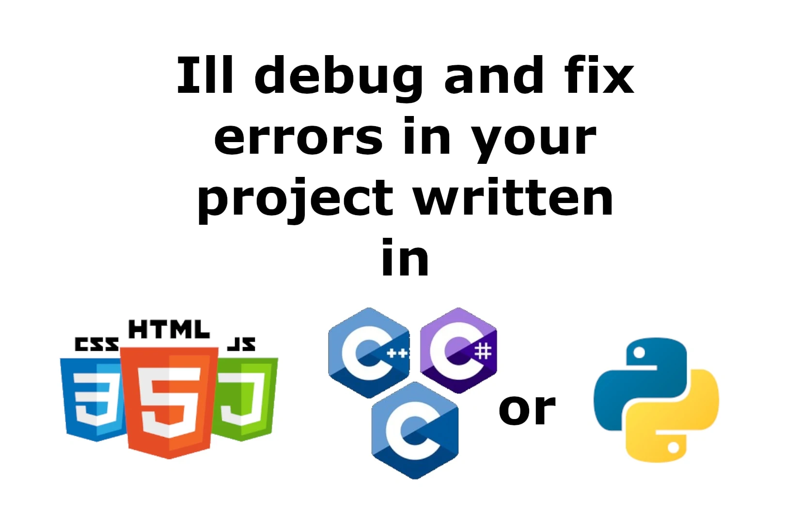

Hire Me
Available for Fiverr contracts involving game systems, tools, automation, and engine development. I specialize in C++, Python, Web development, and custom tools for developers and small businesses.
Contact Me:
thomasmarkland302@gmail.com
Fiverr Gigs: 
 Make me a website!
Make me a website!
 Write me a Python script!
Write me a Python script!